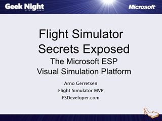

The Microsoft Strategy Secret: Enabling Non-Professional Developers
Speaker(s): Dan Fernandez
Geek Night Supershow
Speaker(s): Donald Hessing, Niels Tanis, Reinhard Brongers
Downloads:
HDVideo(WMV)

Flight Simulator Secrets Exposed: The Microsoft ESP Visual Simulation Platform

Speaker(s): Arno Gerretsen
Microsoft Robotics Developer Studio 2.0: The Making of Woody
Speaker(s): Erik Oppedijk